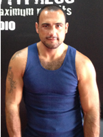
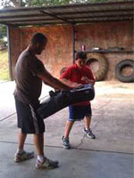
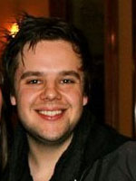

-
Billy “The Kid” Dib
Former IBO World Champ, Former WBC Youth Champ, Currently Number 3 IBF and Currently 12 WBA
Making the choice to train with Haitham from Maximum Fitness was easy. The training however has been hard. This doesn’t matter though because through this hard training regime and Haitham’s motivational skills I feel I have acquired many attributes which are needed in order for a boxer to succeed. These attributes include unbelievable power, increased stamina and vastly improved core body strength. This has been especially evident in last 6 fights in which I’ve scored 6 wins all by the way of knockout. My only regret since training with Haitham is that I didn’t look for his help earlier.
Billy Dib -
Billy Hussain
Professional boxing trainer, currently training “Billy the Kid” for his world title shot
Hi, my name is Billy Hussein, I am a professional boxing trainer, currently training “Billy the Kid” for his world title shot and as part of my boxing program I use the best resources available to me to take my boxers to the next level. Boxing is a science, and I need tacticians and professionals to push my fighter’s bodies and minds to levels they did not know where possible. Haitham Arifaki has been an intricate part of my complete training schedule. Haitham takes my fighters bodies and minds to their strength and conditioning levels that put them above the rest. I have witnessed Haitham’s training techniques first hand with Billy Dib. After much scrutiny and analysis I can with clear conscious say that Haitham has contributed to Billy’s massive improvement in power and strength. Clearly and with no doubt Haitham is a results driven trainer. He is consistently attentive, always focused on the goal, always focused on the client. I would recommend Haitham and go further to say that he should be a part of any professional training team; he will add success for sure.
- 
Andre Kock
"Haitham is a real joy to work with and brings an enthusiasm with him that makes working out fun. He always gives me a variety of exercises that makes what used to be a boring process actually stimulating and enjoyable and challenging. He always explain to me how an exercise is working for me, and explains the process in simple terms so I can concentrate on how to perform it without being confused or hurt myself. Haitham has an engaging personality that makes you want to work hard and push yourself past what you thought you could do not only is he my Personal Trainer but my Mentor as well. Of course, it is hard work, but Haitham makes you want to achieve your Maximum goals through constant encouragement and tips. I have seen results in a short period of time and for the first time in a very long time I can see my goals as something I can realistically achieve and which I have. He has a wonderful personality and always brings a smile with him. I never feel rushed with him and he makes me feel as if I am his priority every goal I achieve is a win for him as well which makes us a force to be reckoned with. He is organized and moves the sessions along at a good pace without having to pause and think of what to do next. I feel as though Haitham has thought and planned the workout for me each time I am with him. I would not hesitate to recommend Haitham to anyone looking to start a program or gain more knowledge as to what they are doing. The only thing I regret is not calling Haitham sooner!"
Andre Kock
General Manager Health
Blue Sky Health -
Steve Kalliris
Hi Haitham I wanted to thank you for training me for the last 7 months. I had been circuit and weight training for the last 15 years and I considered myself to be pretty fit……..until I met you. You are the best personal trainer I have worked with. Your workouts are always challenging and you have pushed me physically and mentally to limits I never thought I could achieve. The variety and intensity of the workouts has given me a renewed enthusiasm to train harder and help me reach my full fitness potential. I also like the fact that you are well organized and professional, you keep records of our workouts and revisit them weeks later to monitor my progress. I am constantly asked about the training I do and I always have no hesitation passing on your details and recommending you to others Thanks again and I look forward to continuing training with you to achieve maximum fitness
Steve Kalliris -

Jae Stuchbery
After returning to Australia from a 7 year stint in Hong Kong I needed something to get me motivated into exercise again. I found Haitham from Maximum Fitness and haven’t looked back since. I’m 58 years old and he pushes me to my limits but understands my boundaries therefore still getting the best results. His trainings are never dull and boring and his professionalism and knowledge is of the highest standard. I highly recommend anyone serious about results to give Haitham a call.
Jae Stuchbery -
Kirrily Traino
I decided to go to Haitham at Maximum Fitness to lose the baby weight after having my second child. He varies the trainings so you can’t get bored, he keeps them fun but also manages to push you to your limits getting maximum results. I have dropped 5 dress sizes in 3 months and am now back wearing all the clothes I was wearing prior to falling pregnant and could not be happier. Anyone contemplating personal training would be crazy not to use him.
Kirrily Traino - 
Maryanne Kourouche
"I hired Haitham Arifaki from Maximum Fitness to help me with my son’s weight. Not only did Haitham incorporate eating habits and healthy living into my sons overall well being but he also overwhelmed me with his vast knowledge and flexibility in training methods he implemented in all workouts. My sons drive and stamina escalated and in turn so did his confidents levels. I could not believe his progress in his physical strength and endurance in a very short period of time. From a child who could not scrap up a jog to a runner.
Haitham dedicated not only his time but his emotions with every session. When my son was struggling Haithams encouraging words of belief pushed him to levels I thought were not possible.
He then went a step further and created a boot camp for us. He was so accommodating and very respectful in his positive approach to training which has been nothing short of awesome for not only my son but us as a family.
He was our motivator our mentor and our strength never hesitating to flick an email with little suggestions and check on our day to day well being.
I honestly believe if it wasn’t for Haitham my son would not be the confident little footballer he is today.” - 
Jordan
My First thoughts of this plan was it was just another fitness program you can buy online which has results that are reachable only by EXTREME workouts and DEDICATION... I was wrong!
Being 21, you always want to look your best!.. For years I was overweight and it got to a point where i thought.... I deserve to be fit and I deserve to have a body which i am comfortable with! , and Maximum Fitness defiantly helped me develop this!
THE FAST RESULTS FROM THIS PROGRAM IS JUST THE BEGINNING ! -
Simone Berry
My Name is Simone Berry I have been training with Haitham now for 10 months. I have tried several other fitness centres and programs but none seem to be able to compare with the training program Haitham has personally designed for me. For the first time in my life I enjoy exercise and love how I feel after each session. When I first started I could not run at all, Not even for 2 minutes. Haitham has been so patient with me, understanding, professional and helpful in maintaining my enthusiasm and drive to train and lose weight and achieve a fitness level I never thought possible. I love that my sessions are one on one and customised to my fitness level and my time schedule as I am a mum and also work, I sometimes don't have the energy or time to fit in exercise but Haitham always seems to motivate me and has actually changed my whole attitude to exercise to the point I actually like going and want to train more and more. I also like that friends and family have notice I've lost weight and my body shape has changed. I recommend anyone to train with Haitham, he is one of the nicest people I know and if he can motivate me, he can motivate anyone.
Simone Berry